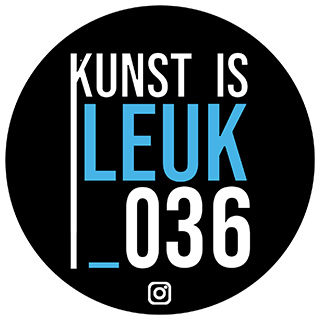

SESI community center
"SESI stands for Student Engagement and Social Impact. We are a project organization within the Social Work program that is committed to promoting inclusive education and an inclusive learning environment."
Read moreKunst Is Leuk 036
"Art is essential for encounter, connection, and understanding; it enriches, fosters dialogue, and adds value to a city's identity.With K=L, we make visual art from Almere accessible to everyone."
Read morePresent time
Present Time brings the cutest home decor and accessories to your interior. The Dutch label designs trendy items, keeping in mind the warm, cozy and uplifting feeling that you want to experience at home. Present Time's mission is to give your interior a personal feel with a touch of trendy Scandinavian design.
Read more